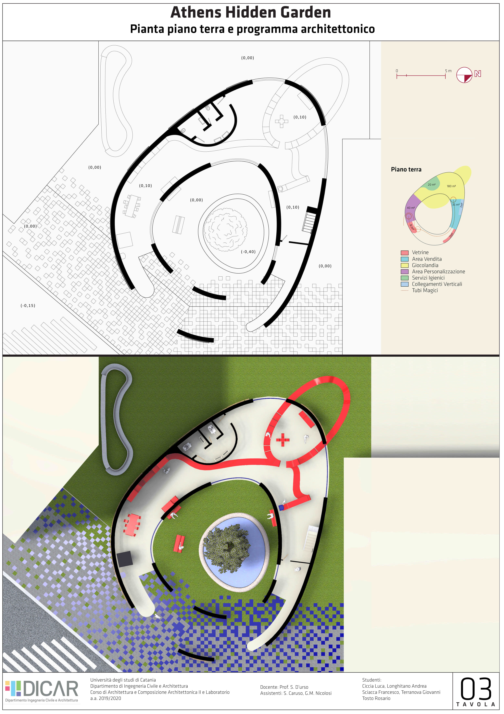
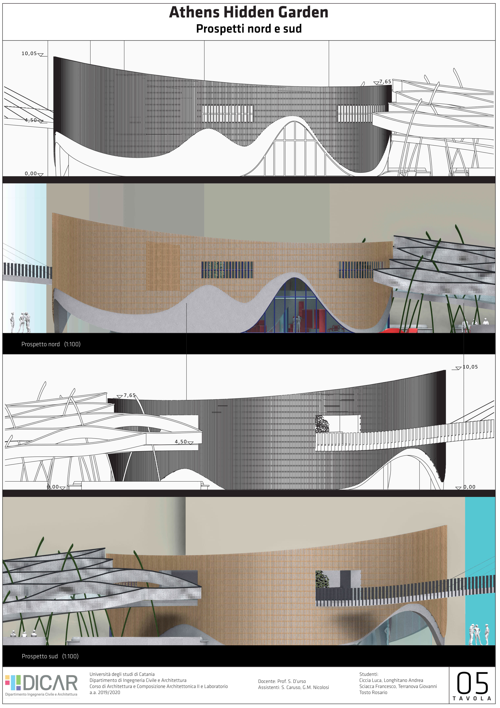
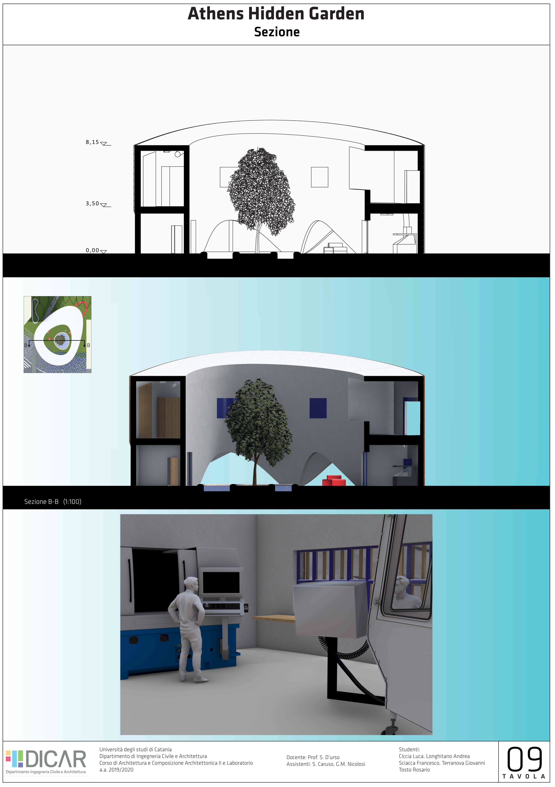

Athens Hidden Garden.
Progetto architettonico di una bottega artigianale con spazio espositivo, area shop ed area giochi.
La bottega si inserisce in un contesto di progettazione più ampio che coinvolge la piazza e la mobilità dell'area.
Colleghi:
Software utilizzati:
  